September 2021 (version 1.61)
Update 1.61.1: The update addresses these issues.
Update 1.61.2: The update addresses these issues.
Downloads: Windows: User System Arm64 | Mac: Universal Intel silicon | Linux: deb rpm tarball Arm snap
Welcome to the September 2021 release of Visual Studio Code. There are many updates in this version that we hope you will like, some of the key highlights include:
- Split editors within the same group - Quickly create side-by-side editors for the same file.
- Locked editor groups - Select editor types to automatically lock in an editor group.
- Better display of deleted and readonly files - Tab decorations highlight deleted and readonly files.
- Bracket pair guides - Display vertical guides to link matching bracket pairs.
- Fixed terminal dimensions - Set an active terminal's width and height.
- Jupyter Notebook improvements - Table of Contents view, full debugging support.
- Platform-specific extensions - Publish different extension versions for Windows, macOS, and Linux.
- Virtual Workspaces extension guide - Learn how to update your extension for virtual environments.
- Advanced container configuration - Tips, code samples, and videos to help configure development containers.
If you'd like to read these release notes online, go to Updates on code.visualstudio.com.
Watch a highlight of the new features in this version in the VS Code team's release party. You can find the recording of the event on our YouTube channel.
Insiders: Want to try new features as soon as possible? You can download the nightly Insiders build and try the latest updates as soon as they are available.
Workbench
Split an editor without creating a new group
A new command Split in Group (⌘K ⇧⌘\ (Windows, Linux Ctrl+K Ctrl+Shift+\)) was added to split an editor into two sides without requiring a second editor group. This allows you to work in two editors side by side on the same file. You can also toggle the layout between splitting vertically or horizontally via the Toggle Layout button as seen in the short video.

There is a new setting workbench.editor.splitInGroupLayout if you prefer the splitting to be either vertical or horizontal.
There are new commands to use this feature via keybindings:
workbench.action.splitEditorInGroupworkbench.action.toggleSplitEditorInGroupworkbench.action.joinEditorInGroupworkbench.action.toggleSplitEditorInGroupLayout
And to navigate between the sides:
workbench.action.focusFirstSideEditorworkbench.action.focusSecondSideEditorworkbench.action.focusOtherSideEditor
The new color sideBySideEditor.border sets the color for the border to separate one side from the other.
Locked editor groups
We introduced locked editor groups last milestone as an experimental new feature. During this milestone, the settings experience was improved allowing you to easily select an editor that should lock a group automatically when opening:
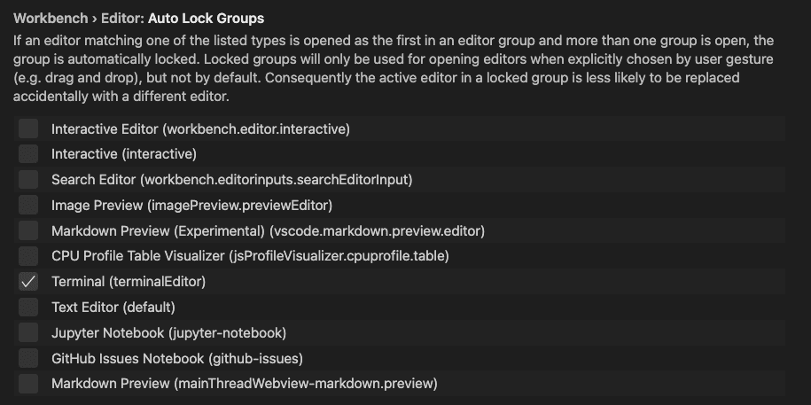
The setting is now called workbench.editor.autoLockGroups. Similarly, the commands related to editor group locking have been renamed and are no longer experimental:
workbench.action.lockEditorGroupworkbench.action.unlockEditorGroupworkbench.action.toggleEditorGroupLock
Indicate deleted and readonly editors via decorations
Opened editors can indicate whether they are readonly or whether their associated resource has been deleted from disk. This indication was given by appending "deleted" and/or "readonly" to the editor label, requiring quite a bit of space.
VS Code now uses decorations for this purpose:
- Editors with deleted resource appear with strikethrough and in red.
- Editors with readonly resources appear with a lock icon.
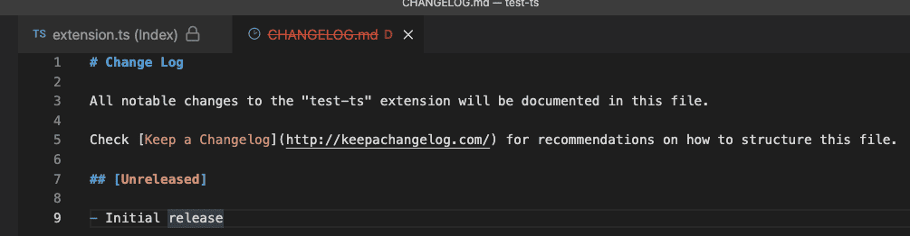
Split an editor into an existing group
When you split an editor to the side, VS Code opens a new editor group, even if an existing group is present to the side. However, there are times when you want to split an editor into an already existing group.
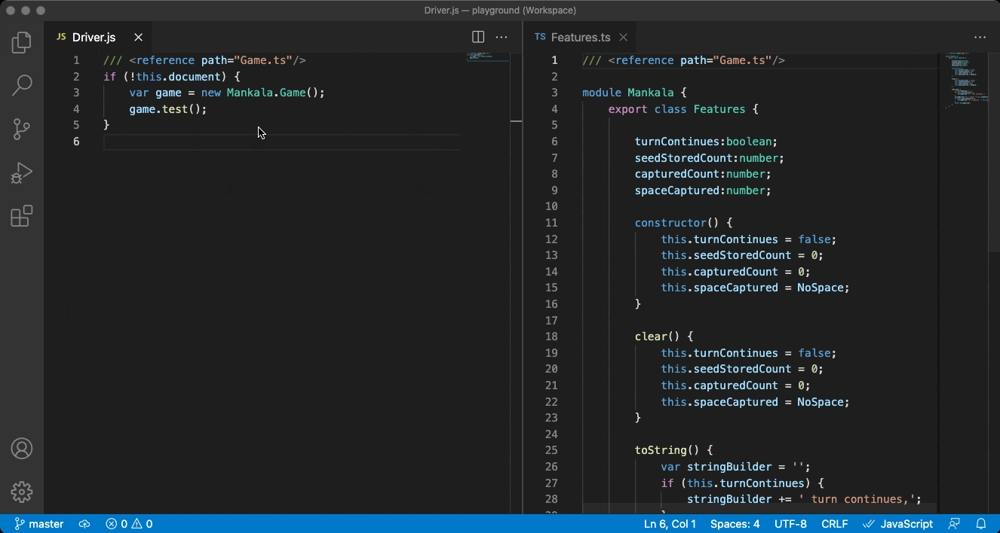
To support this, new commands were added:
workbench.action.splitEditorToPreviousGroup: Split into the previous group.workbench.action.splitEditorToNextGroup: Split into the next group.workbench.action.splitEditorToAboveGroup: Split into the group above the current one.workbench.action.splitEditorToBelowGroup: Split into the group below the current one.workbench.action.splitEditorToLeftGroup: Split into the group to the left of the current one.workbench.action.splitEditorToRightGroup: Split into the group to the right of the current one.workbench.action.splitEditorToFirstGroup: Split into first group.workbench.action.splitEditorToLastGroup: Split into last group.
Shorter labels for diff editors
When you compare two files, the workspace relative folder path was prefixed on file names, making it hard to see the names of the files being compared.
In this release, the folder is now hidden from the label, unless both file names are the same, matching the behavior for normal editor labels.
If both file names are identical, a description is shown that hints at the folder difference:
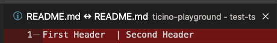
macOS: File menu changes
On macOS, if you select the Open... menu item from the File menu, you can open both files and folders. For new users, this may come as a surprise, and people tried to use the Open Workspace command to open a folder, when that menu item is specifically to open a .code-workspace file.
To avoid confusion, we made slight adjustments to the file menu on macOS:
- A new entry Open Folder... opens a folder.
- Open Workspace... was renamed to Open Workspace from File...
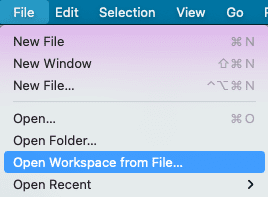
Telemetry settings
There is a new telemetry setting, telemetry.telemetryLevel that provides higher configuration granularity and lets users select whether they want to only send error telemetry and not general usage data. The values are on, error, and off. The values of on and error will also enable the crash reporter.
The existing settings telemetry.enableTelemetry and telemetry.enableCrashReporter have been marked for deprecation in favor of the new telemetry.telemetryLevel setting but will continue to be respected.
Minimap background transparency
It is now possible to configure the minimap background opacity independently of the minimap text's opacity using the newly added minimap.foregroundOpacity color.
Updated Help menu items
With the ongoing improvements to the getting started experience, the Help menu items were updated to more commonly used names. This is based on learnings from new users but hopefully make it easier for everyone to find help. Welcome is now Get Started, Introductory Videos is Video Tutorials, and Interactive Playground became Editor Playground. You will find the new names in both the Help menu and the Command Palette. The Help menu also has a Show All Commands entry as an additional entry point to open the Command Palette.
Editor
Bracket pair guides
The editor now supports rudimentary bracket pair guides. Bracket pair guides use the same colors and the same algorithms as the bracket pair colorization feature. The bracket pair matching algorithms are described in detail in the recent "Bracket pair colorization 10,000x faster" blog post.
Similar to indentation guides, the active bracket pair guide is highlighted.
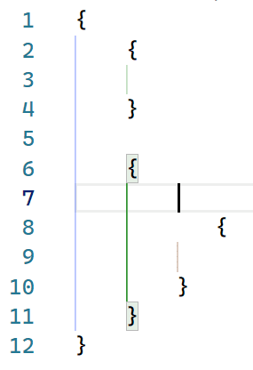
Bracket pair guides can be enabled by configuring the editor.guides.bracketPairs setting (defaults to false).
We will continue iterating on this feature and explore vertical guides in the next release.
Indentation guides settings
The editor.renderIndentGuides and editor.highlightActiveIndentGuide settings have been deprecated in favor of editor.guides.indentation and editor.guides.highlightActiveIndentation.
Source Control
Publish or Sync "action button" for Git repositories
The Git extension now adds a new "action" button to the Source Control view, to allow you to more easily publish or sync any unpushed changes.
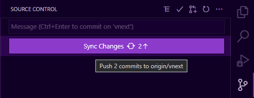
Theme: Amethyst Theme
By default, the Git extension will add a Sync Changes button as shown above, if there are unpushed commits, or a Publish Changes button if the branch hasn't yet been published. Additionally, users can customize this behavior by configuring the git.showUnpublishedCommitsButton setting, which defaults to whenEmpty so that the button will only be shown if there are unpushed commits and there are no other changes in the view.
This new action button is available as a new proposed API for Source Control extensions, see the Proposed API section below for more details.
And finally, users can completely disable the visibility of any action buttons in the Source Control view via the new scm.showActionButton setting, which overrides any Source Control extension's behavior.
Increased limit on changed files display
Prior to this release, the Git extension had a hard-coded limit of 5000 changes that it could show in the Source Control view. The limit was to prevent the user from having to wait too long while VS Code processed all the changes reported by Git. This limit is now increased to 10,000 changes, and there is a new git.statusLimit setting to allow users to customize the limit (per repository if desired). This setting can also be set to 0 to disable the limit completely, but be aware this could cause updates to take a long time if there are lots of changes.
Additionally, we've added the following warning indicator on the input box when the limit has been exceeded.
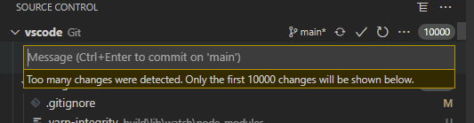
Terminal
Fixed dimensions
You can now statically set terminal dimensions via the Terminal: Set Fixed Dimensions command (workbench.action.terminal.setDimensions). This is useful for cases when line wrapping can be jarring or disruptive.
The command will display a prompt where you can enter the preferred width and/or height.
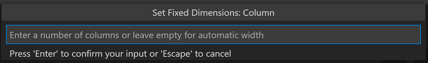
Custom title and description
Terminal names are usually the name of the process they're associated with and it can sometimes be difficult to distinguish between terminals.
You can now configure both the title and description using variables in the terminal.integrated.tabs.title and terminal.integrated.tabs.description settings.
The current default values are:
{
"terminal.integrated.tabs.title": "${process}",
"terminal.integrated.tabs.description": "${task}${separator}${local}${separator}${cwdFolder}"
}
Variables available are:
${cwd}- The terminal's current working directory${cwdFolder}- The terminal's current working directory.${workspaceFolder}- The workspace in which the terminal was launched.${local}- Indicates a local terminal in a remote workspace.${process}- The name of the terminal process.${separator}- A conditional separator (" - ") that only shows when surrounded by variables with values or static text.${sequence}- The name provided to xterm.js by the process.${task}- Indicates this terminal is associated with a task.
Emoji IMEs
Emojis are now supported for Input Method Editors (IME) on macOS.
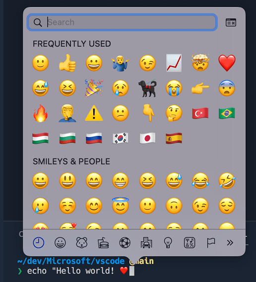
Alt buffer active context key
Some terminal UI applications, like nano, use keyboard shortcuts that are consumed by the VS Code workbench, which limits their functionality when integrated within VS Code. A new when clause context key, TerminalContextKeys.altBufferActive, directs keybindings to the terminal instead of the workbench when the alt buffer is active to work around this.
Languages
New JavaScript and TypeScript language status item
The current TypeScript version and IntelliSense state are now shown in the language Status bar item:
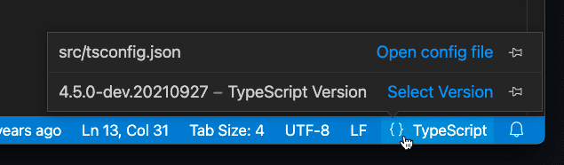
Previously, the TypeScript version was always shown in the Status bar. You can pin the version to restore the old behavior:
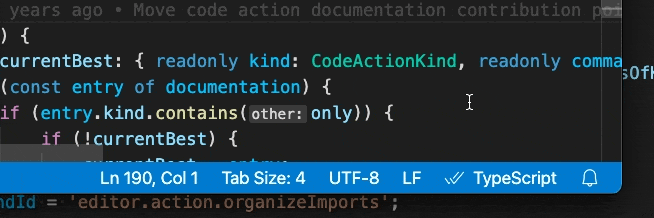
The language status item also shows the current file's jsconfig/tsconfig and will indicate if you are currently in partial mode.
IntelliSense across untitled files
All untitled JavaScript and TypeScript files are now treated as part of the same project. This means that global symbols defined in one untitled file will now show up as suggestions in others.
This better matches the behavior of on-disk files in the workspace. You can add an import or export to an untitled file to turn it into a module, which will hide its global variables from other files.
IntelliSense across files on the web
IntelliSense now works across JavaScript and TypeScript files on vscode.dev or github.dev when VS Code is running in a browser.
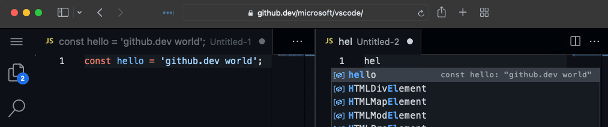
Keep in mind that when VS Code is running in the browser, it only has access to your currently opened files, so VS Code cannot provide project-wide IntelliSense features such as automatic imports.
More consistent folding of JSX tags
When you fold a JSX tag in JavaScript or TypeScript, VS Code now continues to show the closing tag:
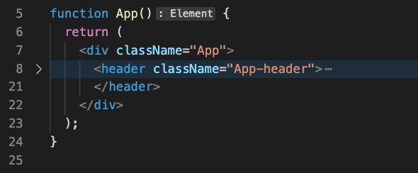
This matches how folding works in HTML.
Preview features
TypeScript 4.5 support
This update includes initial support for the upcoming TypeScript 4.5 release. See the TypeScript 4.5 beta announcement post for more information about the new language and tooling features. Some tooling highlights:
- Initial support for JSX attribute completions.
- More accurate reference counts for the references CodeLens.
To start using the TypeScript 4.5 nightly builds, install the TypeScript Nightly extension.
Please share your feedback and let us know if you run into any bugs with TypeScript 4.5.
Restore terminal sessions across application restarts
Terminal processes are disposed of when a VS Code window is closed. In this release, there is a new opt-in setting for recording and restoring the buffer and using it to recreate processes. Set terminal.integrated.persistentSessionReviveProcess to enable this.
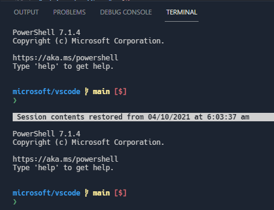
Toggle size terminal to content width
You can toggle the terminal width between fitting the full contents and wrapped lines via ⌥Z (Windows, Linux Alt+Z) or using the tab context menu action Toggle Size to Content Width.
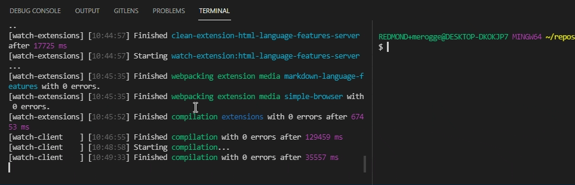
This is similar to, and shares the keybinding with, toggling wrapped lines in the editor.
Contributions to extensions
Jupyter
Table of Contents
Table of Contents for Jupyter Notebooks can now be accessed via the command Jupyter: Show Table of Contents in the Command Palette. This same feature can also be accessed via an icon in the notebook toolbar.
This feature applies to all notebooks within VS Code, hence is accessible via the Outline view in the File Explorer.
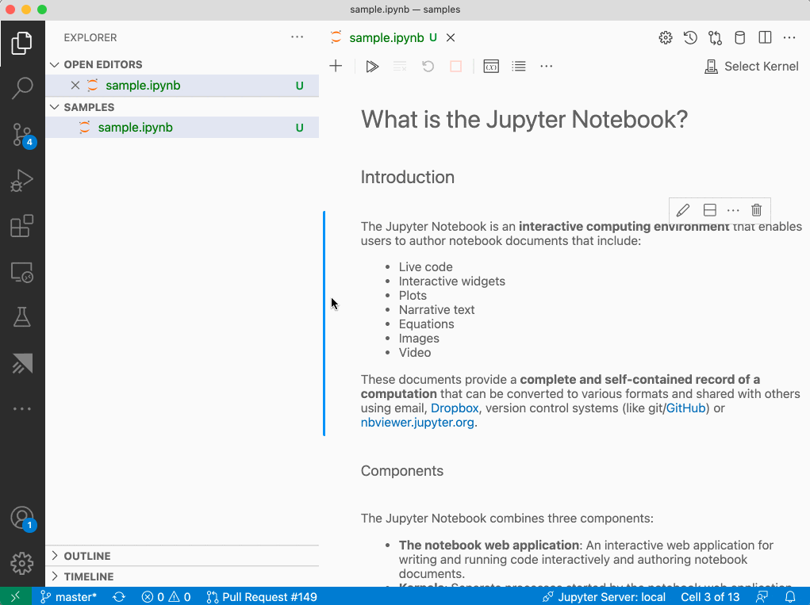
Create new Notebooks via New File menu
You can now create a new Jupyter Notebook using the menu item File > New File.... This menu can also be accessed from the New File... item on the Get Started page or in the Command Palette.
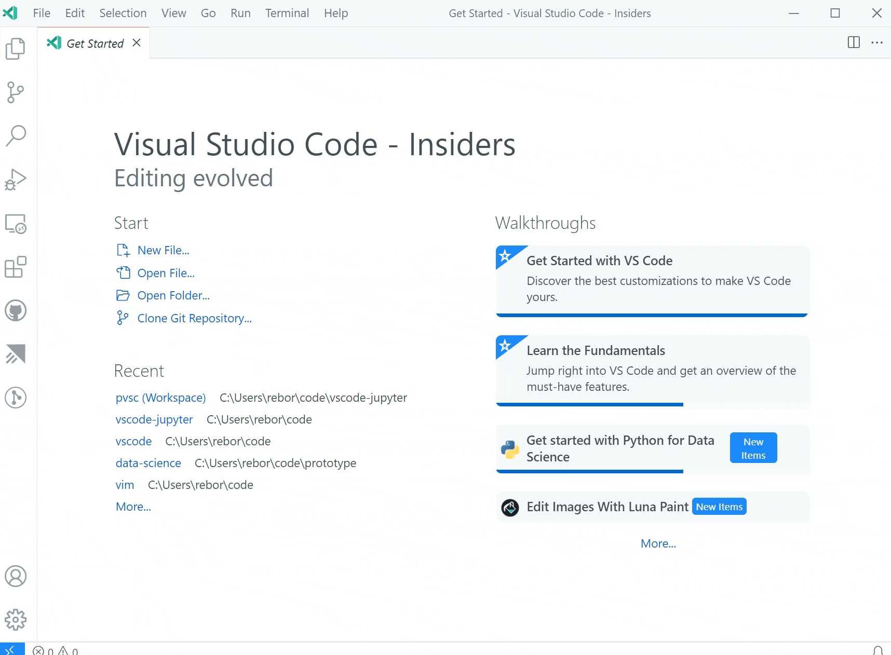
Debugging
VS Code now supports full debug features for Jupyter Notebooks. To try it out, make sure you have ipykernel v6+ installed as your selected kernel, set a breakpoint, and select the Debug Cell command.
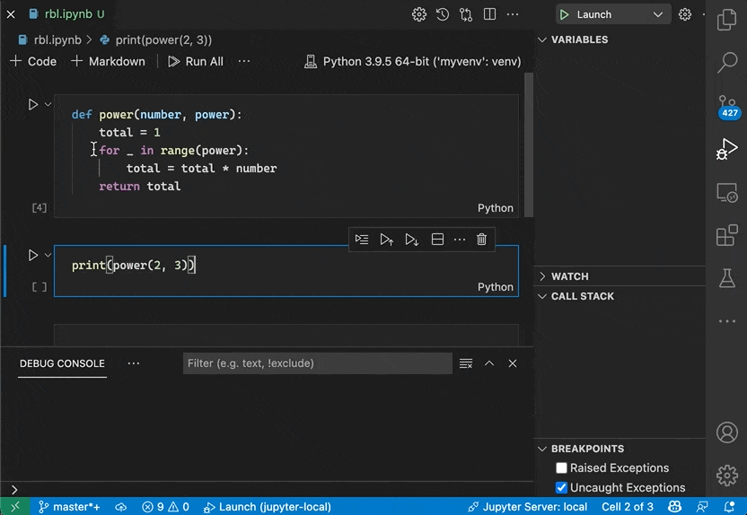
Remote Debugging
You can also use Run by Line and debug Jupyter Notebooks using remote kernels. To try it out, connect to your remote kernel with the Jupyter: Specify local or remote Jupyter server for connections command, make sure you have ipykernel v6+ installed as your selected kernel, and use Run by Line or debugging as usual.
Separate renderer extension
Jupyter Notebook renderers have been split out into a separate extension (Jupyter Notebook Renderers), allowing users to view Notebook outputs such as plotly, vega, latex, and the like on vscode.dev and github.dev.
Python
New Python walkthrough
The Python extension now offers a walkthrough with some basic setup steps to improve the getting started experience for Python in VS Code.
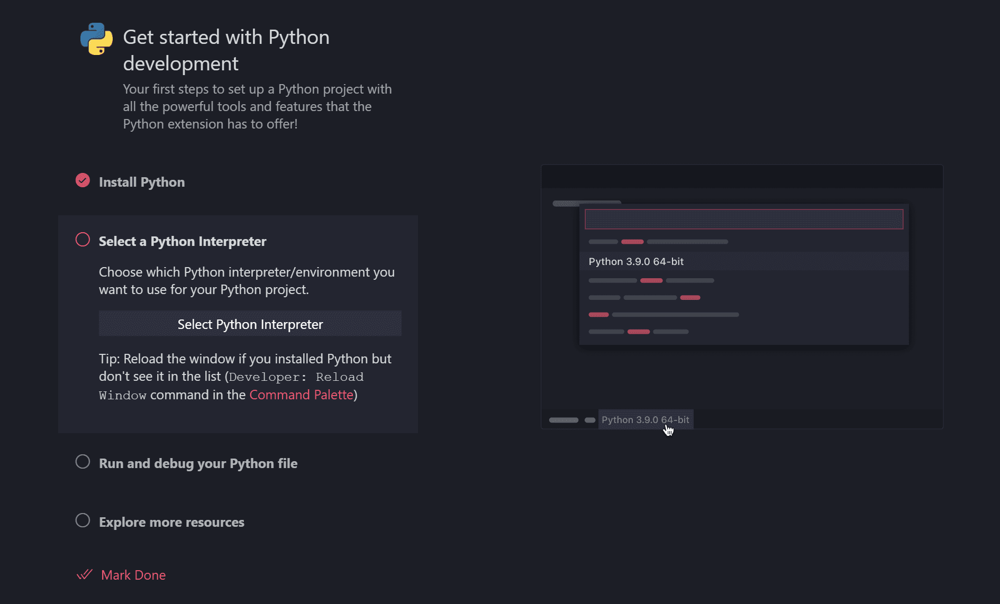
Improved debugging experience
When working with workspaces without a launch.json configuration file, the Python extension would display a debugger configuration menu every time you started debugging a Python file or project. This could be particularly annoying when debugging a web application with custom arguments (such as Flask, Django, or FastAPI).
You now no longer need to choose a configuration every time you start debugging, as the first selection you make is reused for the rest of the session.
GitHub Pull Requests and Issues
Work continues on the GitHub Pull Requests and Issues extension, which allows you to work on, create, and manage pull requests and issues. Check out the changelog for the 0.31.0 release of the extension to see the highlights.
Remote Development
Work continues on the Remote Development extensions, which allow you to use a container, remote machine, or the Windows Subsystem for Linux (WSL) as a full-featured development environment.
Feature highlights in 1.61 include:
- DNS names in forwarded ports.
- Easy container additional feature selection.
- Dev Containers extension can execute CLI commands in WSL.
You can learn about new extension features and bug fixes in the Remote Development release notes.
Extension authoring
Platform specific extensions
Extensions can now publish different VSIXs for each platform (Windows, Linux, macOS) supported by VS Code. Starting with VS Code version 1.61.0, VS Code looks for the extension package that matches the current platform. Starting with version 1.99.0, the vsce extension publishing tool supports publishing platform-specific extensions.
Platform-specific extensions are useful if your extension has platform-specific libraries or dependencies, so you can control the exact binaries that are included in a platform package. A common use case is when an extension uses native node modules.
More about this can be found in our platform-specific extensions documentation.
Test tags and non-error output
This month we shipped additional APIs for extensions building on the new testing APIs.
-
Test tags allow you to configure if and how certain tests can be run--or not.
-
Non-error output allows you to associate additional console output with specific test cases.
Messages from the output are displayed inline, similarly to failure messages.
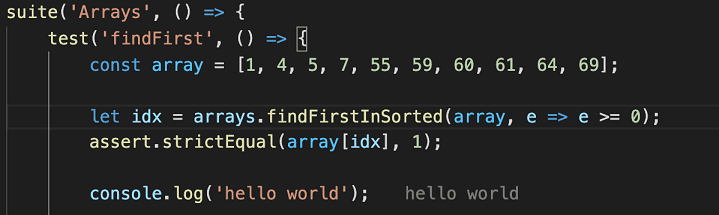
Enable file system providers to declare a file as readonly
File system providers can now mark individual files as readonly via a new permissions property on the FileStat object by setting the value of the property to FilePermission.Readonly. Readonly files are not editable.
Note: If all files should be treated readonly, you can use the existing isReadonly option when calling registerFileSystemProvider.
Settings editor extension categories
The Settings editor now displays a subtree for an extension's contributes.configuration endpoint when there are categories.
To create multiple categories, the contributes.configuration accepts an array of configurations, and the title key of each configuration is used for the section headings. There is also an order field, which allows categories to be reordered within the subtree.
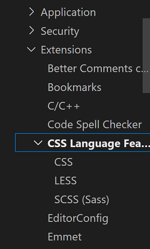
Type hierarchy
The API proposal for adding type hierarchy providers has been finalized.
WebviewOptions.enableForms
The new enableForms property on WebviewOptions allows you to enable or disable forms inside webviews. For backwards compatibility, enableForms defaults to true if you have already set enableScripts. Otherwise it defaults to false.
We recommend disabling forms unless your webview content needs them.
Terminal state
A new state property is exposed on the Terminal object, in addition to a corresponding window.onDidChangeTerminalState event, and indicates whether or not a terminal has been interacted with by the user. For example, an extension might want to wait until a user has interacted with the terminal to run an action.
Running web extension tests on test data
The @vscode/test-web node module offers a CLI and API to test web extensions in Chromium, Firefox, or Webkit.
New for this milestone is the option folderPath to open VS Code for the Web on test data. An in-memory file system contains the resources of the given location so that tests have files to work with.
vscode-test-web --browserType=chromium --extensionDevelopmentPath=$extensionLocation $testDataLocation
Updated codicons
The following new icons were added to our codicon library:
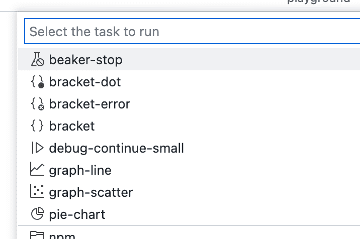
beaker-stopbracket-dotbracket-errorbracketdebug-continue-smallgraph-linegraph-scatterpie-chart
Webview UI Toolkit for Visual Studio Code
The Webview UI Toolkit for Visual Studio Code is a component library for building webview-based extensions in Visual Studio Code.
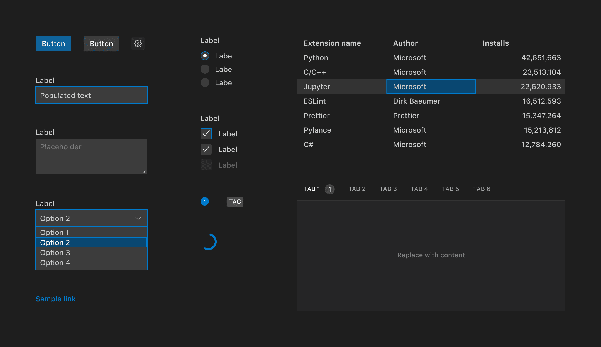
Features of the library include:
- Implements the Visual Studio Code design language: Create extensions that have a consistent look and feel with the rest of the editor.
- Automatic support for color themes: All components are designed with theming in mind and will automatically display the current editor theme.
- Use any tech stack: The library ships as a set of web components, meaning developers can use the toolkit no matter what tech stack (React, Vue, Svelte, etc.) their extension is built with.
- Accessible out of the box: All components ship with web standard compliant ARIA labels and keyboard navigation.
Virtual Workspaces extension guide
There is a new Virtual Workspaces extension guide to help extension authors test and update their extension when VS Code is running in virtual environments. With the introduction of extensions like GitHub Repositories, which creates its own virtual file system, and new workflows like vscode.dev and github.dev, where VS Code is running in your browser, extensions can no longer assume they have direct access to an on-disk file system or platform features.
The Virtual Workspaces extension guide covers:
- Whether your extension will work in virtual workspaces without modification.
- How to update your extension to work in a virtual workspace without an on-disk file system.
- How to signal to VS Code whether to enable or disable your extension when running in a virtual workspace.
Proposed extension APIs
Every milestone comes with new proposed APIs and extension authors can try them out. As always, we want your feedback. This is what you have to do to try out a proposed API:
- You must use Insiders because proposed APIs change frequently.
- You must have this line in the
package.jsonfile of your extension:"enableProposedApi": true. - Copy the latest version of the vscode.proposed.d.ts file into your project's source location.
You cannot publish an extension that uses a proposed API. There may be breaking changes in the next release and we never want to break existing extensions.
TaskPresentationOptions close property
The close property, which is a presentation property in the tasks.json schema, is available in the TaskPresentationOptions API. It functions in the same way as the matching tasks.json property by controlling whether the terminal will be closed upon completion of the task.
Tabs API
There is a proposed API for reading and manipulating tabs. This unblocks common feature requests such as wanting access to the list of open resources when there is not a backing textDocument. You can provide feedback about this API in issue #133532.
MarkdownString.supportHtml
The newly proposed supportHtml property on MarkdownString enables rendering of a safe subset of raw HTML that appears inside the Markdown text.
The supportHtml property defaults to false. When disabled, VS Code will strip out any raw HTML tags that appear in the Markdown text.
Controller renderer scripts now use JavaScript modules
NotebookController.rendererScripts lets notebook controllers preload a set of JavaScript files into the notebook before any renderers are run. These scripts can initialize the notebook or define global symbols that the renderers depend on.
The renderer scripts were previously normal JavaScript files. These scripts could use a global symbol exported by VS Code to call VS Code specific APIs.
This global symbol was not discoverable and also didn't give VS Code much control over the renderer scripts themselves. To fix that, renderer scripts now use JavaScript modules that export an activate function. This function is passed the VS Code API:
interface KernelPreloadContext {
readonly onDidReceiveKernelMessage: Event<unknown>;
postKernelMessage(data: unknown): void;
}
export function activate(ctx: KernelPreloadContext): Promise<void> | undefined {
...
}
This change also better aligns the renderer script from a NotebookController with the rendering scripts provided by a contributed notebook renderer.
Quick Pick keepScrollPosition property
The keepScrollPosition property on the QuickPick object that you get back from window.createQuickPick() has been added as a proposed API. This allows you to control whether or not the scroll position (cursorTop) in the Quick Pick moves back to the top of the list.
Here are a few use cases for this API:
- Implementing a "remove this item from the list" option using the proposed
QuickPickItemButtons API (for example, Ctrl/Cmd + PxQuickPickItemButton). - Implementing a "toggle this item in some way" option using the proposed
QuickPickItemButtons API (for example, Insert Snippet command). - Asynchronously loading items in the Quick Pick (like
setIntervaladding an item to the list by reassigning the.itemsproperty, where scroll shouldn't jump to the top).
Without the ability to control scroll position, every one of these operations would force the scroll position of the Quick Pick to jump up to the top of the list. The keepScrollPosition allows extension authors to control this behavior.
SourceControl.actionButton
The source control API now includes a actionButton property on SourceControl object that allows SCM providers to conditionally show an "action" button below the input box. For example, the Git extension uses this new property to show a publish or sync button when there are unpushed changes.
Language Server Protocol
A new next version of the Language Server Protocol, together with the corresponding npm modules, has been published. The new version contains a proposed implementation for type hierarchies.
Engineering
Switching to DOMPurify to sanitize rendered HTML
We've switched to using DOMPurify internally to sanitize HTML that is rendered in the main workbench. This is mainly used for sanitizing rendered Markdown.
DOMPurify is well maintained and compliant with trusted types out of the box. This switch helps protect users and gives us more confidence in enabling features such as MarkdownString.supportHtml.
Using the open command for Big Sur CLI
On macOS Big Sur, we now use the open command to spawn VS Code when launched from the command line. This change allows VS Code to open as though it were launched from the macOS Dock, which fixes some issues involving entitlements.
File watching changes
The file watcher used to detect changes to files and folders on disk changed to a library that can handle all of our supported platforms (Windows, Linux, macOS) and reduces the overhead of maintaining different watchers for different platforms. We plan to enable this library by default on all platforms. This iteration we enabled it on Windows and macOS, and plan to enable it on Linux shortly.
The new watcher should be faster on startup and result in fewer CPU cycles spent on large folders. One downside of using the library is that the file watcher no longer automatically detects folders in a workspace that are symbolic links on macOS. If you have such a setup, you can use the new files.watcherInclude setting to explicitly add symbolic link paths to include for file watching. On the upside, you can use this new setting on Windows to explicitly include symbolic link folders inside the workspace - something that was not possible before on Windows.
You should not notice any difference in your day to day work, but if file watching is broken for you, please report an issue. There is a setting files.legacyWatcher to enable the old watcher if you run into problems.
Documentation
Advanced container configuration
There is a new section covering the Dev Containers extension's advanced container configuration.
In the container documentation, you can learn how to:
- Set environment variables
- Mount local disk drives
- Add a non-root user
- Work with multiple containers
- And more...
The advanced container configuration documentation has tips and code examples for setting up your development containers as well as short YouTube videos.
Notable fixes
- 69665: Terminal shows corrupt texture sometimes when resuming the OS from a sleep state
- 130407: [trivial] settings>files: exclude changing pattern as (blank) won't deletable
- 133149: Task terminal marked failed for info/warning-level problems.
- 133567: accessibility: the labels for the top-level tree nodes in find references all just read "true"
- 133910: Show an error when resolving shell environment fails or is timing out
- 133976: Allow to open a
.code-workspacevia protocol URL
Thank you
Last but certainly not least, a big Thank You to the following people who contributed this month to VS Code:
Contributions to our issue tracking:
- John Murray (@gjsjohnmurray)
- Andrii Dieiev (@IllusionMH)
- CodeCrazy-ywt (@CodeCrazy-ywt)
- ArturoDent (@ArturoDent)
- Alberto Santin (@albertosantini)
- Tarunav.BA (@TarunavBA)
- Simon Chan (@yume-chan)
Contributions to vscode:
- @adaex (Aex)
- Update to latest seti-ui icon theme PR #131856
- Update to latest seti-ui icon theme PR #132512
- @aghArdeshir (aghArdeshir): Remove IE-support for clipboard data PR #133679
- @AiverReaver (Ashish Vagish): added feature to add keybinding to Copy Command Title(fix #131350) PR #131436
- @AkatQuas (Akat)
- fix(html-language-feature): remove vague statement PR #132508
- fix: early return on cancellation PR #132523
- @akosyakov (Anton Kosyakov): apply installation options for extensions from vsix files PR #131786
- @armanio123 (Armando Aguirre): Add jsxAttributeCompletionStyle setting PR #133920
- @CGNonofr (Loïc Mangeonjean): Add resolveCodeAction to monaco registerCodeActionProvider PR #133335
- @crackalak (Dan Hughes): Added
ariaContainerElementtoIStandaloneEditorConstructionOptionsPR #131865 - @crimx (CRIMX): fix: correct submenu position calculation PR #133596
- @davidanthoff (David Anthoff): Add setKernelSpecAndLanguageInfo to ipynb ext PR #132298
- @door-bell (Tim): Fix formatting on setting workbench scroll sensitivity setting description PR #132214
- @DragWx: Allow bracket pairs to share open tokens or close tokens in the colorizer PR #132504
- @fwcd (FW): Add Citation File Format (
.cff) to the recognized YAML file extensions PR #131323 - @gjsjohnmurray (John Murray)
- Append hint text to placeholder if input supports history PR #129324
- Prevent duplicate '(read-only)' suffix on window title (#_132127) PR #132134
- @heartacker: add cmd+i (mac), ctrl+i (linux/win) as additional intellisense toggleSuggestionDetails PR #131976
- @IllusionMH (Andrii Dieiev): Fix keys used to resolve terminal settings PR #132851
- @jackos (Jack Clayton): Added close field in vscode.d.ts interface TaskPresntationOptions PR #131127
- @jeanp413 (Jean Pierre): Fixes terminal editor tab displays content from another terminal editor tab PR #131211
- @jwei98 (Justin Wei): Do not fold closing tag PR #132316
- @LEGOL2 (Sebastian Łużyński): Increase max file size for file comparison PR #127860
- @MarkZuber (Mark Zuber): Add telemetry to extension host startup success/fail PR #131917
- @MasterOdin (Matthew Peveler): Docs: Fix grammar on language and value docstrings PR #132782
- @matkoniecz (Mateusz Konieczny): recognise .geojson as json, fixes #129329 PR #129330
- @philnagel (Philipp Nagel): Recognize .pyt files in Python extension PR #133546
- @SNDST00M (SNDST00M: M.U.N.I.N): Allow comments in all JSON files PR #129206
- @ssigwart (Stephen Sigwart)
- Fix fold jumping with no parent fold PR #130309
- Make go to next/prev folding range more intuitive PR #133363
- Fix Typescript NLS JSON PR #134179
- @Suven-p (Suven-p): Remove colorized bracket pair for plain text files PR #132534
- @Un-index: Update iframe.ts PR #132577
- @utajum (Vladimir Tasic): Minimap - highlight all instances of selected word PR #132584
- @youngjuning (洛竹): fix: GetSessionOptions -> AuthenticationGetSessionOptions PR #131644
- @yume-chan (Simon Chan)
- fix: progress text in welcome page PR #133812
- fix: avoid stack overflow when loading bracket guides for large files PR #134189
- @goldst (Leonard Goldstein): Multiple tab labels for diff editors PR #116178
Contributions to vscode-eslint:
- @eungyeole (Eungyeol): Add exception to a .gitignore PR #1332
- @geekanant (Anant Patni): fix: tasks typo PR #1342
Contributions to vscode-html-languageservice:
- @domdomegg (Adam Jones): Update method and formmethod HTML attrs capitalization PR #113
- @ssigwart (Stephen Sigwart): Add doNotAddAttributeQuotes setting to disable automatic quotes PR #112
Contributions to vscode-json-languageservice:
- @dsherret (David Sherret): fix: clear
JsonSchemaServicelocal single resource cache on schema change PR #105
Contributions to vscode-languageserver-node:
- @AkatQuas (Akat): fix: modify some comments in jsdoc PR #817
- @link89: fix import of jsonrpc module PR #805
Contributions to vscode-pull-request-github:
- @burkeholland (Burke Holland)
- Fixes #2259 PR #2909
- Respect remote link type for upstream PR #2929
- Button sizes don't look right when PR title is wrapped PR #2966
- Focus border is used on assignees when it's not focused PR #2967
- Create commit select horizontal padding is too high PR #2970
- Fixes Tick SVG doesn't look right #2950 PR #2971
- PR created x minutes ago is cut off in small tabs PR #2985
- Lowercase branch names PR #2986
- Skipped status check is shown as pending PR #3005
- @lgarron (Lucas Garron): GitHub permalinks: Deduplicate the line number if the range is one line. PR #2980
- @moshfeu (Mosh Feu): fix: make pending checks "show" button / link accessible PR #2972
Contributions to vscode-references-view:
- @Eskibear (Yan Zhang): show type hierarchy PR #71
Contributions to vscode-vsce:
- @prashantvc (Prashant Cholachagudda): Fixed an issue where search returns ADO and VSIDE PR #606
- @wangweixuan (Wang Weixuan): Supports repository shorthand PR #598
- @youngjuning (洛竹): chore: add defaultIgnore item PR #614
Contributions to language-server-protocol:
- @larshp (Lars Hvam): semantic highlighting range, does not return delta PR #1345
- @rcjsuen (Remy Suen): Reorder words to fix the grammar PR #1347
Contributions to monaco-editor-webpack-plugin:
- @six-ponies (马騳骉): fix: Failed to execute 'importScripts' on 'WorkerGlobalScope': The URL xxx is invalid. PR #160